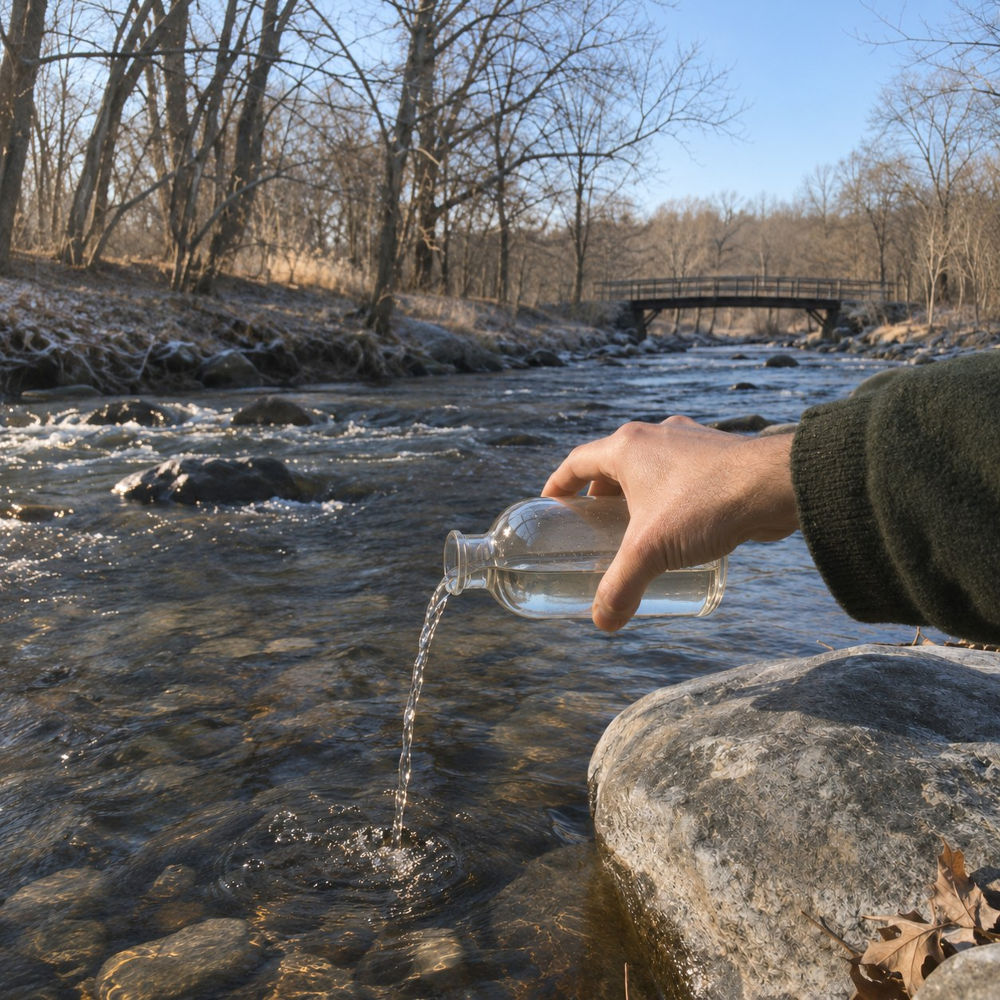
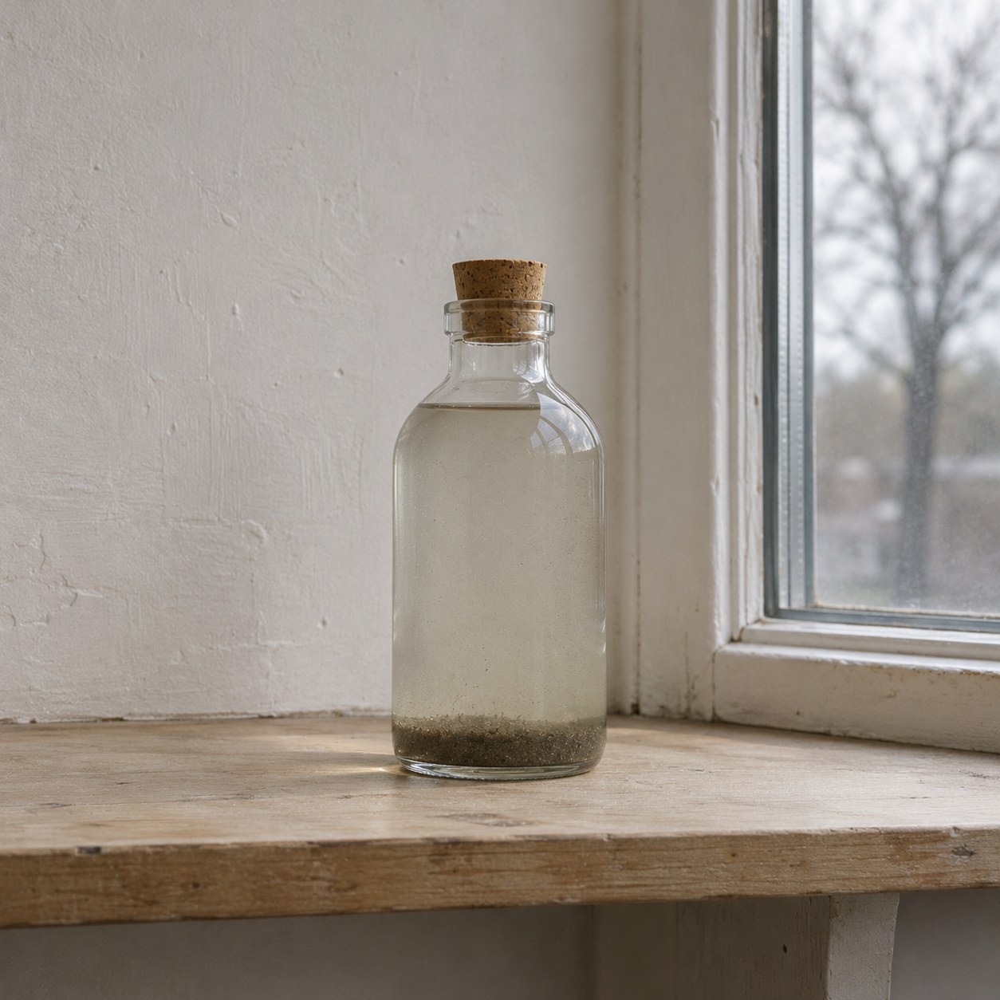

The Water That Stayed


A litre of water was taken from a river on a cold morning and carried home. It sat on a shelf for a year, corked, out of the sun. Then it was carried back to the same bend, beside the same stone, and poured in.
In that year the river did what rivers do. Everything that was in it at that bend went on to the sea, rose, fell as rain somewhere else, and went on again. The river kept its name and its shape and changed every drop of itself. Heraclitus is remembered for saying that you cannot step into the same river twice. He was thinking of the river. He did not ask about the water.
The water in the bottle was the one part of the river that did not move. For a year it held still while the river ran on without it. So it went back as a stranger. It was the oldest thing in the river, a year behind everything around it.
Or the other way round. Perhaps the bottle kept the river, and the river was what left.
Song Dong once sat in the Lhasa River and stamped its surface with a carved wooden seal, again and again, for an hour. The water took every mark and kept none. This river does the same with a return. A second after the pour, the old water is spread out, mixed in, carried off. Nothing in the river knows that anything came back.
Did it come home? By the time the bottle was empty, the water was already passing under the bridge, and no one could have pointed to it.